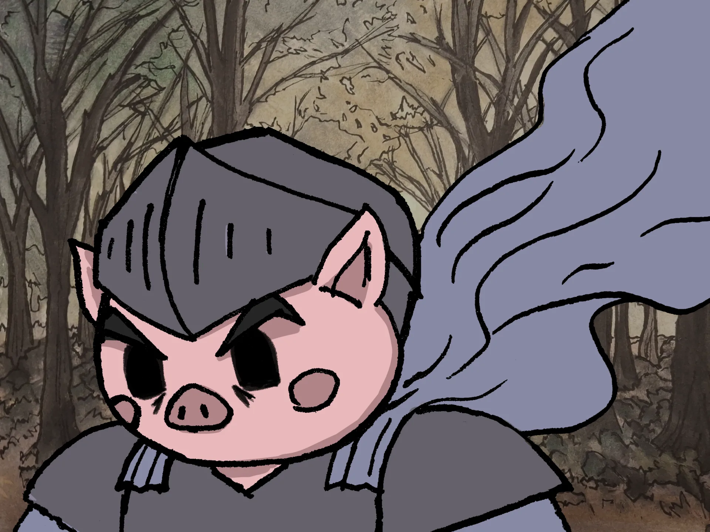
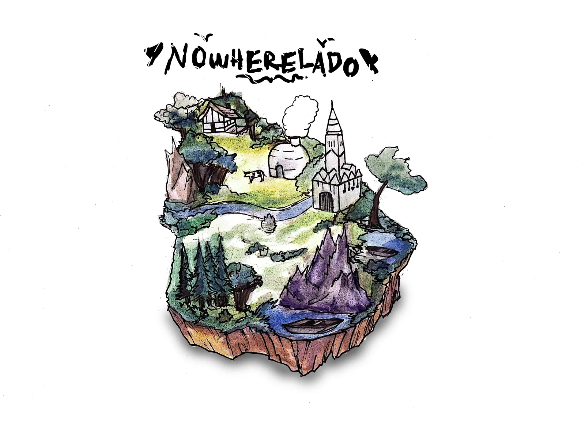

↓ Piggy Knight ↓¿Puede perdonar a la bestia sin convertirse en ella?

Un antiguo caballero, un cerdo guerrero retirado, sale a rescatar a su hija secuestrada. Su verdadero conflicto no es vencer a la bestia, sino no volver a convertirse en ella.
Matar o perdonar
Cada elección cambia la historia y el final.
Combate con peso
Lateral, simple y físico. Cada golpe importa.
Jefes memorables
Cada capítulo culmina en una prueba emocional.
Raíz criolla
Fantasía medieval oscura con alma uruguaya.
La historia
Lineal y cerrada. Tres actos que avanzan a través de cinco capítulos, del cuento inicial al regreso a casa.
Empieza como un cuento
Un padre le narra una historia a su hija. Esa noche, la niña desaparece.
La búsqueda
Cada jefe acusa a otro, en una cadena de manipulación que interna a Piggy en el monte.
El giro
La verdad estuvo siempre cerca del inicio. El desenlace depende de tus decisiones.
La casa
Cuento inicial y secuestro.
Bosque del Lobo
Jefe Lobizón, decisión moral.
El saladero
Escenario grotesco, jefe Carnicero.
Ruinas de guerra
Flashback jugable, el hermano.
Regreso a casa
Revelación, jefe final y decisión.
Personajes

Jugabilidad
Combate con peso
Mover, saltar, atacar, esquivar, bloquear y ataque fuerte.
Diálogos ramificados
Hablá y elegí qué preguntar; las respuestas abren caminos.
Investigación
Revisá objetos y pistas del entorno, o avanzá más a ciegas.
Puzzles narrativos
Pocos y siempre al servicio de la historia.
Flashbacks jugables
Mismo combate, otro tono: el Piggy brutal del pasado.
Decisiones morales
Al vencer a un jefe: matar o perdonar, con consecuencias.

El mundo Nowherelado tiene la forma de Uruguay, con easter eggs del país escondidos en cada rincón.
Identidad uruguaya
Guerra entre hermanos
Ecos de las guerras civiles del pasado criollo.
El Lobizón
El séptimo hijo maldito, el Luisón guaraní.
El saladero
La cultura ganadera y del asado.
Monte y rancho
Ombú, ceibo y espinillo; mate y fogón.
Música criolla
Candombe, murga y milonga; diálogos en voseo.
Arte en movimiento
Animación a mano y fondos en acuarela.
Nowherelado Games
Uruguay